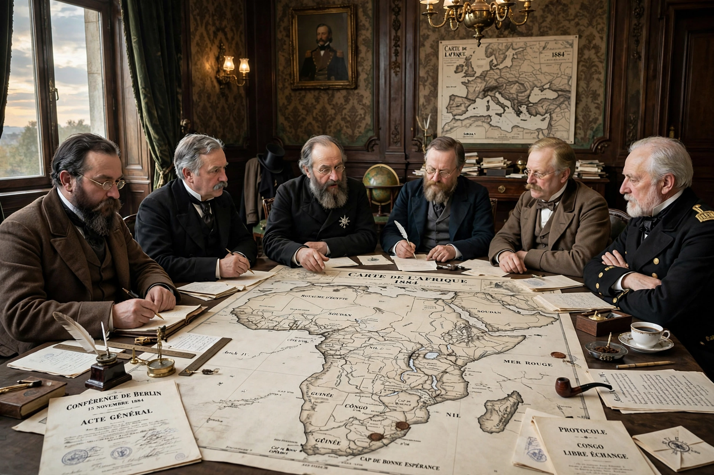

| Berlin Conference | |
|---|---|
 | |
| Dates | 15 November 1884 – 26 February 1885 |
| Location | Berlin, German Empire |
| Convener | Otto von Bismarck |
| Participants | 14 states, incl. all major European powers and the USA |
| Outcome | General Act of Berlin |
The Berlin Conference of 1884–1885, convened by German Chancellor Otto von Bismarck, regulated European colonisation and trade in Africa during the New Imperialism period and formalised the Scramble for Africa. Fourteen states, including the United States, met in Berlin; no African ruler or representative was present.
The conference's General Act (26 February 1885) guaranteed freedom of trade and navigation in the Congo and Niger basins, declared the Congo Free State a neutral, free-trading territory under King Leopold II of Belgium's personal association, and — most consequentially — adopted the principle of effective occupation: a power claiming an African coastal territory had to notify the others and demonstrate actual administration there. Claims to the interior could then be projected from the coast.
The rules accelerated the partition of the continent: by 1914 only Ethiopia and Liberia remained independent of European control. Borders were drawn in European capitals with little regard for African peoples, languages or polities, bequeathing arbitrary boundaries that post-colonial states largely retained. The conference did not itself draw a complete map of Africa, as is sometimes claimed, but it set the legal framework within which the scramble proceeded; Leopold's Congo regime, licensed in its name, became notorious for atrocities in the rubber trade.